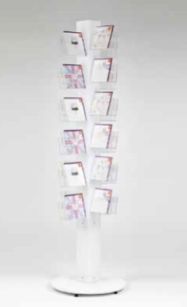
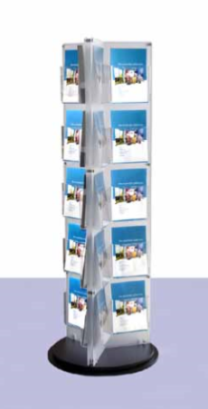
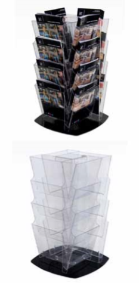

وتــتــوفــر جميع هــذه المنتجات ضمن مجموعة واســعــة من الخيارات في التصميم والتصنيع مع امكانية تنفيذ جميع التصاميم والافكار المقترحة من قبل العملاء
كما يمكن اضــافــة اســمــاء الــعــلامــات التجارية والــشــعــارت أو المعلومات على جميع المنتجات من خــلال الحفر و القص بالليزر او الطباعة الرقمية
حوامل وستاندات بروشور
ستاند دوار

عرض الكتيب الدوارS-01
كتيب أنيق الدوار لعرض مختلف الاحجام من الأدب و. الكتيبات الإطار الصلب وحدات من الدوار يدعم 24 الأكريليك واضحة. جيوب موزع يمكن تعديل كل حجم الجيب لتناسب اما A4 ، A5 أو 2 × DL حجم الكتيبات عن طريق أزاله ببساطه أو تحريك فتحه الأكريليك واضحة. (المقسم (الموردة الانتهاء من الأبيض علي راس العرض الدوار يعطي لطيفه ،. تبدو نظيفه العرض المثالي الدورية الوقوف علي الكتيبات ، وبطاقات المعايدة ، والنشرات الخ. ويتم توفير الدوار علي قاعده الخروع مع عجلات قابله للقفل ذلك. انه يمكن نقلها بسهوله ، حتى عند تحميله. T انه قاعده الخروع هو متاح في النهاية اما ابيض أو اسود. عموما الابعاد 1922mm عاليه x 545mm واسعه x 545mm العميقة. الوزن تقريبا 34kg يمكن وصفت خاتم راس في الأعلى من الدوار مع. (شعار الشركة أو رسالة إذا لزم الأمر (سيتم تطبيق تكلفه اضافيه

32 الوجه كتيب دائري S-02
. كتيب دائري عرض 32 وجوه من A4 هذا موزع كتيب لديه جيوب للانفصال التي مقطع ببساطه. في العمود الفقري الرئيسي يتم توفير موقف جذابة وقويه العرض كمعيار مع. قاعده الخروع. الوجه 32 دائري كتيب هو 1910mm عاليه عموما القاعدة في ذلك › s أكبر قطر هو 575mm وجيوب لا. تمتد خارج هذا كل جيب هو 218 مم واسعه x 247mm عاليه x 87mm العميق مع مقسم مركزي إعطاء 2 وجوه لكل جيب

48 عرض بطاقة تحيات الوجهS-03
. ووجه 48 عرض بطاقة تحيات الدوار الغزل بطاقة متاح مع اما العمود الفقري الأكريليك بلوري ابيض ، وقاعده بيضاء ، وجيوب بطاقة الأكريليك واضحة أو في الأكريليك واضحة. في جميع انحاء بناء علي نجاح لدينا بطاقة شعبيه جدا تصميم الدوار ، 48 الوجه وقد تطورت بطاقة عرض موقف والعمود الفقري الأبيض متجمد وقاعده بيضاء يعزز نوعيه ونظره. من الأكريليك بطاقة الغزل وجيوب الأكريليك واضحة مقطع ببساطه في العمود الفقري للبطاقة. الدوار جيوب الأكريليك واضحة مقطع داخل وخارج العمود الفقري المركزي ، مما يجعل من السهل ان تختلف تكوينات احجام الجيب إذا لزم الأمر في تصميم الجيب يعني أيضا انه إذا كان الجيب معطوب ، يمكن استبداله بسهوله وبتكلفه منخفضه. سعة جيب بطاقة المعايدة في كل من وجوه 48 هو 40mm. الارتفاع الكلي للبطاقة الدوار هو 1945mm. قطر القاعدة التدابير 560mm

الدوار علي قاعده العجلاتS-04
مقطع في تصميم الجيب يسمح لك لخلط وتطابق جيوب تصميم هذا الدوار بطاقة تحيات يسمح لك ببساطه تحديد حجم الجيب الذي يناسب بطاقاتك أو بطاقة بريديه. مختلفه يمكن حتى جيوب حجم توضع علي بطاقة واحده الدوار. جيوب عرض بطاقة ببساطه مقطع إلى العمود الفقري المركزي هذا دائري بطاقة الأكريليك علي عجلات التالي من السهل. التحرك في جميع انحاء منطقه البيع بالتجزئة الخاصة بك إذا رغبت في الغزل بطاقة الأكريليك هو نموذج لدينا أفضل بيع والعروض. قيمه رائعه للمال البصمة من الدوار بطاقة صغيره في مساحة التجزئة القيمة الخاصة بك ، ولكن بطاقات حجم كبير قادره علي ان يتم عرضها. الرئيسية: الميزات

معلومات بالتناوب الحرS-05
قابل للتعديل احجام الجيب للكراسات ، بطاقات المعايدة أو. الجداول الزمنيه علي اطار من الصلب وحدات دائري دواره يمكن تعديل كل حجم الجيب عن طريق أزاله أو نقل ببساطه. (واضحة الفاصل فتحه الأكريليك (الموردة. 3a4 منشورات/كل من جيوب 24 ستعقد اما A4 ، A5 أو 2 × 1 يتم توفير موزع الأدب الدورية علي قاعده الخروع مع عجلات قابله للقفل بحيث يمكن نقلها بسهوله ، حتى عندما. تحميل. عموما الابعاد 1922mm عاليه x 545mm واسعه x 545mm العميقة. الوزن تقريبا 34kg هذه المعلومات دائري مثاليه لعرض العديد من أنواع الأدب ، ولكن يمكن أيضا ان تتكيف لعرض الملصقات. من فضلك اتصل بنا للحصول علي التفاصيل يحتوي موقف النشرة علي نقطه بيع في اعلي الدائري والتي يمكن وصفها بشعار الشركة بتكلفه اضافيه. . يرجى الاتصال بنا للحصول علي عرض أسعار

حامل الكتيب الدوارS-06
ولحامل الكتيب الدوار سته وجوه تسمح بمجموعه كبيره من الكراسات الاعلاميه ، والمنشورات ، وبطاقات المعايدة ، أو. الكتيبات التي سيتم عرضها علي بصمه صغيره واحده الدوار عرض المعلومات مثاليه لعرض المعرض ، والأدب الدائم العرض أو مناطق الاستقبال أو المعلومات العامة. الارتفاع الكلي لهذا الكتيب الدائري هو 1800mm قاعده الدورية الموقف كتيب التدابير 650mm. القطر. كل عمق الجيب التدابير 42mm مصنوعة لوحات تستقيم من حامل الكتيب في متجمد. الأكريليك مع جيوب الأدب الأكريليك واضحة

الوقوف للبطاقات أو أقراص الفيديو الرقميةS-07
عرض قابل للتعديل تقف مع جيوب نمط السلة التي يمكن تقسيمها بواسطة مشابك بلاستيكية (48 المرفقة) لعرض متفاوتة العرض. من البطاقات أو المنتجات. يتم توفير هذا التاجر عرض علي قاعده الخروع هذا الموقف يقف الطابق مثاليه للعرض من حجم مختلف. بطاقات المعايدة ، منشورات ، أقراص مدمجه ، أقراص فيديو رقميه ، ألعاب وحده التحكم أو مقاطع الفيديو. (الابعاد الشاملة 515mm (w) x 515mm (d) x 1750mm (h. كل حجم الجيب 420mm (w) x 35mm عميق الارتفاع الأقصى للعرض بين كل مستوي الجيب هو. 210mm

A4 كتيب دائري S-08
. كونترتوب دواره A4 كتيب الوقوف وموزع الدورية لديه قاعده القرص الدوار الأسود و 16 جيوب. لعرض قدره كل جيب هو 35mm والبعد الداخلي. هو 215mm. الارتفاع الكلي للموزع كتيب هو 745mm يتم توفير هذا دائري كتيب معباه شقه للأفضل. النقل مخصص الاحجام وتكوينات متاحه عند الطلب ، يرجى الاتصال بنا مع الابعاد المطلوبة والكمية المطلوبة ، للحصول علي. ا اقتباس